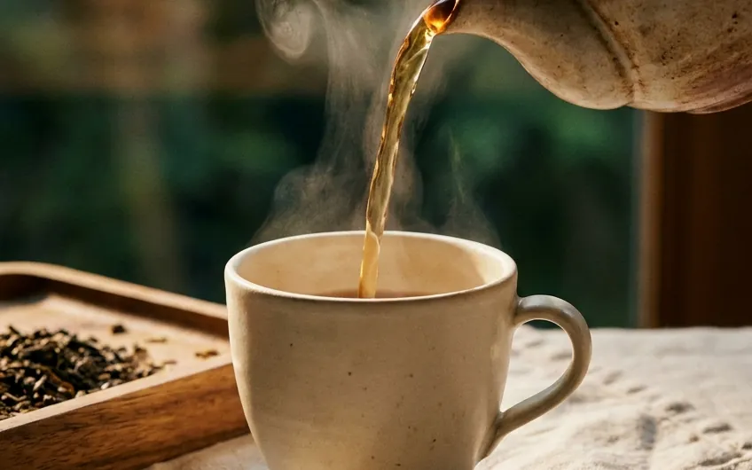
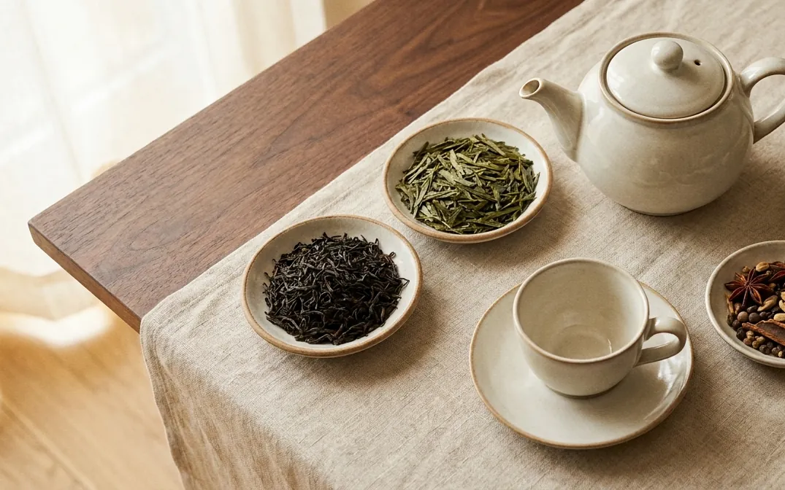

THE RITUAL EDITEvery cup has
Every cup has
a moment.
Explore tea through aroma, flavor, temperature and ritual.
Start your tea journey →
LEAF / WATER / TIME
The tasting table

BLACK TEA
Malty & enveloping
Ideal moment: an unhurried morning. Brew in a warmed pot.
FROM LEAF TO CUP
Five quiet decisions.
An intuitive path to brewing loose-leaf tea with mindfulness, aroma and intention.
DECISION 01 OF 05Aroma & Intuition
01
Choose by mood, not rules.
Begin with the aroma and character you want to meet in the cup. Select leaves that reflect the quietness or energy your present moment asks for.
TEA BY MOMENT
What does the moment ask for?
OUR SUGGESTION
Structured black tea
Malty, warming cups with enough character for milk if you wish.
Build your perfect cup.
YOUR BREWING PROFILE
90°WATER
Black tea · 2 tsp · 4 minutes
Illustrative brewing guidance.